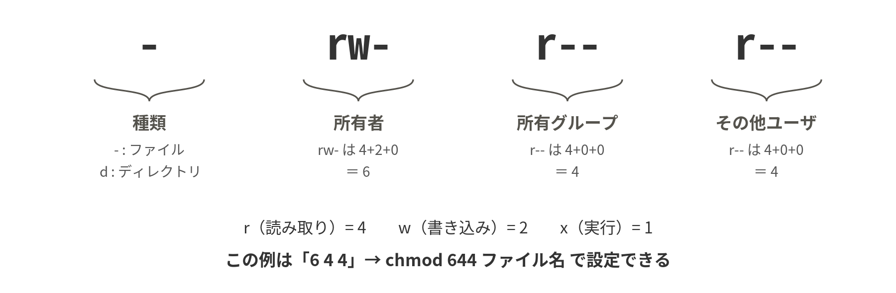

サーバを非root運用に切り替え、プレイヤーを権限（privs）とBANで管理する。監視コマンドとログからサーバの状態を読み取れるようになる。
タイムテーブル（180分）
| 時間 | 内容 |
|---|---|
| 20分 | ミニ講義：なぜ運用が必要か（ゲームサーバの障害・乗っ取り事例） |
| 35分 | パーミッションとユーザ管理、サービスの非root化 |
| 30分 | Luantiのプレイヤー管理（アカウント・権限・BAN） |
| 35分 | 負荷実験と監視コマンド |
| 35分 | ログ解析演習 |
| 15分 | SSHの公開鍵認証への切替 |
| 10分 | 確認項目の達成チェック |
この回の流れ
- 権限の読み方を覚えるls -l と chmod
- ユーザとsudoを整理する最小権限の原則
- サービスを非root化するこの回の山場 3-1〜3-3で35分
- プレイヤーを管理するprivsとBAN 30分
- 負荷をかけて監視する35分
- ログから事実を読み取る35分
- SSHを公開鍵認証にする15分
3-1パーミッション
Linuxのすべてのファイル・ディレクトリには「誰が読めるか・書けるか・実行できるか」というアクセス権（パーミッション）が設定されている。ls -l で確認できる。（背景は第5章 5.3 パーミッションの仕組み）
ls -l ~/server/luanti.conf
-rw-r--r-- 1 taro taro 214 ... luanti.conf
↑ ↑ ↑
アクセス権 所有者 所有グループ先頭の1文字は種類（-：ファイル、d：ディレクトリ、l：シンボリックリンク）を表し、続く9文字は3文字ずつ「所有者」「所有グループ」「その他ユーザ」のアクセス権を表す。r は読み取り、w は書き込み、x は実行（ディレクトリの場合は中に入れること）を意味する。上の例なら「所有者taroは読み書き可、それ以外は読み取りのみ可」である。

パーミッションの変更（chmod）
変更にはchmodコマンドを使う。記号による指定と数値による指定がある。数値は r=4、w=2、x=1 の合計で表す（rwx=7、r-x=5、r--=4）。
いま何をするか：記号指定と数値指定の両方を実際に打って、権限の足し引きの感覚をつかむ。
chmod u+x script.sh # 所有者(u)に実行権(x)を追加
chmod o-w file.txt # その他ユーザ(o)から書き込み権(w)を削除
chmod 755 script.sh # rwxr-xr-x に設定（数値指定）
chmod 600 secret.txt # rw------- 所有者以外は読めない記号指定と数値指定を混ぜてはいけない。chmod +755 や chmod u+755 は誤りで、数値指定は chmod 755 のように数字だけを書く。記号指定は「足す・引く」（u+x、o-w）、数値指定は「3桁で丸ごと置き換える」という別々の考え方である。数値は左から所有者・グループ・その他の順なので、chmod 644 と chmod 664 は意味が違う。なお chmod 777 は「誰でも書き換えられる」という意味であり、困ったときの解決策として使ってはならない。
所有者の変更（chown）
いま何をするか：ファイルの持ち主そのものを変えるchownを確認する。3-3節でデータをluantiユーザに引き渡すときに使う。
sudo chown ユーザ名 ファイル名 # 所有者の変更
sudo chown -R ユーザ名:グループ名 ディレクトリ # 所有者とグループを再帰的に変更3-2ユーザ管理とsudo
Linuxには全能の管理者ユーザrootと、一般ユーザが存在する。すべての作業をrootで行うと、操作ミス一発でシステムを破壊しかねず、乗っ取られたときの被害も甚大になる。
そこで、通常の作業は一般ユーザで行い、管理者権限が必要なときだけsudoで一時的に権限を借りる。これが現代のサーバ運用の基本原則（最小権限の原則）である。（背景は第5章 5.2 rootとsudo）
| コマンド | 役割 |
|---|---|
sudo adduser ユーザ名 | ユーザの新規作成（対話形式でパスワード等を設定） |
sudo usermod -aG グループ ユーザ | ユーザをグループに追加（例：sudoグループ） |
sudo userdel ユーザ名 | ユーザの削除 |
su - ユーザ名 | 別ユーザに切り替え |
whoami ／ id | 現在のユーザ名／所属グループの確認 |
sudo が聞いてくるパスワードはrootのパスワードではなく、今ログインしている自分のパスワードである。打ち込んでも画面には何も表示されないが、これは仕様なのでそのまま入力してEnterを押す。また su - luanti と su luanti は別物で、前者は相手ユーザのホームディレクトリと環境変数まで引き継ぐ「ログインし直し」、後者はユーザだけ変わって$HOMEなどが元のままになる。本実習では必ず - を付けた su - luanti を使う。今どのユーザなのか分からなくなったら whoami と pwd で確かめる。
3-3演習：サービスの非root化
現在、Luantiサーバは自分のユーザ（sudo権限を持つ）で動いている。もしサーバソフトに脆弱性があって乗っ取られたら、攻撃者は自分の権限をそのまま手に入れる。そこで、sudo権限を持たない専用ユーザ「luanti」を作り、サービスをそのユーザで動かすように変更する。これは実務のサーバ構築で必ず行う定番の作業である。
adduser を実行すると英語の対話（パスワード設定、氏名などの質問）が始まる。氏名等はEnter連打で空欄のままでよい。ここで設定したluantiユーザのパスワードは第4回以降 su - luanti のたびに使うので、必ず記録しておくこと。このパスワードでSSHログインもできてしまうので、自分のユーザと同じ強さの、使い回さないパスワードにする。
なお、本来は「サーバを公開する前に非root化まで済ませる」のが望ましい順序である。実習では学習の順番の都合で公開が先になっているが、実務で自分のサーバを立てるときは「公開は最小権限にしてから」を原則にしよう。（サービスの仕組みの背景は第6章 6.2 systemdとサービス）
いま何をするか：専用ユーザを作り、サービスを止めてからワールドのデータを丸ごとそのユーザの持ち物にする。
sudo adduser luanti # 専用ユーザの作成
sudo systemctl stop luanti # サービスを一旦停止
sudo mv ~/server /home/luanti/server # データの引っ越し
sudo chown -R luanti:luanti /home/luanti/server # 所有者の変更次に、ユニットファイルの [Service] セクションを書き換える。変更するのは User、WorkingDirectory、ExecStart 内の2か所のパスに加え、Environment=HOME=/home/luanti の1行を追加する点である。Luantiは起動時に実行ユーザのホームディレクトリ（環境変数HOME）を必ず参照し、これが無いと起動できない。systemdは User= から HOME を自動で設定するが、どのホームを使うかを読み手にも明確にするため1行で明示しておく。書き換え後の [Service] セクションは次のとおり（[Unit] と [Install] は第2回のままでよい）。
[Service]
User=luanti
Environment=HOME=/home/luanti
WorkingDirectory=/home/luanti/server
ExecStart=/usr/games/luantiserver --world /home/luanti/server/world --gameid minetest --config /home/luanti/server/luanti.conf --logfile ""
Restart=on-failureいま何をするか：ユニットファイルを書き換え、systemdに読み直させてから起動し、動いているユーザが変わったことを確かめる。
sudo vi /etc/systemd/system/luanti.service
（上の [Service] セクションのとおりに書き換える）
sudo systemctl daemon-reload # 変更の読み込み（忘れがち！）
sudo systemctl start luanti
sudo systemctl status luanti # active (running) を確認ps aux | grep luanti を実行し、luantiserverプロセスの実行ユーザがluantiになっていることを確認しよう。
※ うまく起動しない場合は journalctl -u luanti -e でエラーを読む。たいていは chown のし忘れ（Permission denied）か、パスの書き間違いである。エラーメッセージは敵ではなく、原因を教えてくれる味方である。教員・支援員を呼ぶ前のセルフチェック3点：①whoami（今どのユーザか）②pwd（どこにいるか）③直前のコマンドの誤字。su で入れ子になったら exit で戻れる。
ユニットファイルを書き換えただけでは変更は効かない。sudo systemctl daemon-reload を挟まずに start すると、systemdは古い内容のまま起動するので、「直したのに直らない」と悩むことになる。もう一つの定番は sudo chown -R luanti:luanti /home/luanti/server のし忘れで、このときログには Permission denied が並ぶ。journalctl -u luanti -e でそれを見つけたら、ls -l /home/luanti/server で所有者を確かめ、chown をやり直す。-R（再帰的）を付けないと中のファイルは自分のユーザのままなので、必ず付けること。
systemctl status luantiがactive (running)になっているps aux | grep luantiの行の先頭（実行ユーザ）がluantiになっているls -l /home/luanti/serverの所有者とグループがluanti luantiになっている
3-4Luantiのプレイヤー管理
Linuxのユーザ管理と同じ発想が、Luantiサーバの中にもある。Luantiのアカウントはサーバごとに独立しており、プレイヤーが初回接続時に入力した名前とパスワードがそのサーバに登録される（登録内容はワールド内の auth.sqlite にパスワードのハッシュとして保存される。ハッシュについては第5章 5.1 マルチユーザシステムの補足を参照）。
プレイヤーができることはprivs（権限）で制御される。luanti.conf の name に指定したプレイヤー（＝あなた）は管理者としてすべての権限を持ち、ゲーム内のチャット（Tキー）から管理コマンドを実行できる。Linuxのユーザ管理と対比して理解するとよい。（詳しくは第11章 11.4 アカウントと権限（privs）、第11章 11.9 権限（privs）の一覧と運用、第11章 11.11 管理チャットコマンド一覧）
- アカウント登録⇔adduser
- privs⇔グループと権限
- /grant・/revoke⇔usermod（権限の付け外し）
- /ban⇔特定の接続元（IPアドレス）からの接続拒否
いま何をするか：ゲーム内チャットから使う管理コマンドを一通り押さえる。これらはサーバのターミナルではなく、Luantiのチャット欄に打ち込む。
/status # サーバの状態と接続者一覧
/privs プレイヤー名 # 権限の確認
/grant プレイヤー名 fly # 権限の付与（例：飛行）
/revoke プレイヤー名 fly # 権限の剥奪
/ban プレイヤー名 # 接続中のそのプレイヤーのIPアドレスを出入り禁止
/unban プレイヤー名 # 解除
/grant プレイヤー名 creative # クリエイティブ権限の付与（負荷実験で使う）※ アイテムを直接入手する /giveme は、本実習の環境では権限が登録されておらず（unknown privilege）使えない。TNTなどのアイテムが必要なときは、上のように creative 権限を与えてクリエイティブモードのインベントリから取り出す。サーバ全体をクリエイティブにしたい場合は luanti.conf に creative_mode = true を追記してサービスを再起動してもよい。
近くの人に自分のサーバへ接続してもらい、次の3点を確認しよう。相手がいない場合は教員・支援員が接続役を務めるので申し出ること。
- 一般プレイヤーには管理コマンドが実行できないこと。
/grantで権限を与えると実行できるようになること。- 相手が接続中に
/banすると、その端末から再接続できなくなること（/banは名前ではなくIPアドレスを禁止するため、接続中のプレイヤーにしか使えない。解除は/unban）。
※ セキュリティ上の要点が2つある。第一に、管理者名の先取り登録：name に指定した名前は「最初にその名前で登録した人」のものになるため、サーバ公開後は真っ先に自分で登録する。第二に、パスワードの使い回し禁止：サーバ管理者はauth.sqlite内のハッシュにアクセスできるため、プレイヤーとして他人のサーバに登録するパスワードは、他のサービスと共用しない使い捨てのものにする。
/statusで自分と接続者の名前が表示される/privs 相手の名前の結果が、/grantや/revokeの前後で変わる/banした相手が再接続できず、/unbanで戻せることを確認した
3-5サーバの監視
サーバ管理者は「今サーバが健康かどうか」を数値で把握する。おもな確認項目は、負荷（load average）、メモリ、ディスク、プロセスの4つである。（load averageの読み方の背景は第6章 6.3 負荷の指標を正しく読む）
| コマンド | 確認できること |
|---|---|
uptime | 稼働時間とload average（1分・5分・15分の平均負荷）。CPUコア数（Pi 400は4）を下回っていれば正常 |
free -h | メモリの使用状況。スワップが常用されていたらメモリ不足 |
df -h | ディスクの使用状況。Use%が100%に近づくと危険 |
ps aux | 実行中のプロセス一覧。ps aux | grep luanti でLuantiサーバを確認 |
top（htop） | 上記をリアルタイムに一括表示。qで終了 |
vcgencmd measure_temp | SoC温度（Raspberry Pi固有）。80℃を超えると性能が制限される。videoグループのユーザのみ実行できる（初回セットアップで作った自分のユーザは所属済み） |
演習：負荷実験
BYODのターミナルをもう1つ開いてサーバにSSHし、そちらで top を表示したまま（数値の記録は元のターミナルで uptime・free -h・vcgencmd measure_temp を打つ）、Luantiクライアントでワールドに接続して次の実験を行い、数値の変化を実験記録に残そう。負荷をかける対象は必ず自分のサーバのみとする。他人のサーバへの負荷試験は、相手の明示的な同意がある場合に限る。
- 平常時：接続者0人のときのload average・メモリ使用量・温度を記録する。
- 接続時：自分＋近くの人がワールドに入り、未踏の地へ全力で移動する（新しい地形＝マップブロックの生成はCPU負荷が高い処理である）。load averageの変化を観察する。
- 高負荷時：管理者のプレイヤーで
/grant 自分のプレイヤー名 creativeを実行し、インベントリ（Iキー）のクリエイティブ欄からTNTを取り出して、大量に設置して起爆する。load averageが上がる様子と、ゲーム内の動きが遅れる（ラグ）との関係を体感する。
この実験から「なぜmax_users=5に設定したのか」「サーバの性能設計とは何か」を自分の言葉で説明できるようになるはずである。
- 平常時と高負荷時のload average（
uptimeの3つの数値）を数字で記録した free -hとvcgencmd measure_tempの値も、同じタイミングで記録した- 数値の変化と、ゲーム内で感じたラグとを結び付けて説明できる
3-6演習：ログ解析
サーバに起きたことはすべてログに記録されている。ログを読む力は、障害対応・セキュリティ調査の生命線である。Luantiサーバのログは、systemdのログ基盤（journald）に集約されており、journalctlで読める。（背景は第8章 8.1 ログ管理）
いま何をするか：Luantiサービスのログを、末尾だけ・リアルタイム・今日の分、と3通りの見方で開いてみる。
journalctl -u luanti -e # 末尾（最新）へ移動して表示
journalctl -u luanti -f # リアルタイム監視（Ctrl+Cで終了）
journalctl -u luanti --since today # 今日の分だけ表示ログには、プレイヤーの入退室、チャット、管理コマンドの実行などが時刻付きで記録される。grepと組み合わせて必要な情報を抽出する。なお、接続が切れた場合の退室は leaves game ではなく times out と記録される。
journalctl -u luanti | grep "joins game" # 入室の記録
journalctl -u luanti | grep "leaves game" # 退室の記録
journalctl -u luanti | grep -c "joins game" # 入室回数を数える
journalctl -u luanti | grep CHAT # チャットの記録-e と -f は役割が違う。-e は「これまでのログの末尾を開く」で、読み終わったら q で抜ける。-f は「これから出るログを流し続ける」ので、プロンプトが戻ってこないのは正常であり、止めるにはCtrl+Cを押す。入退室を実際に起こしながら観察したいときは -f、起動失敗の原因を探すときは -e と使い分ける。grep の検索語に空白が入るときは "joins game" のように必ず引用符で囲む。何も出ないときは、まだその操作をしていないか、大文字小文字が違う（grep -i で試す）ことを疑う。
課題：近くの人と互いのサーバで入退室・チャット・死亡などの操作を行い合ったのち、ログだけを証拠として「何時何分に誰が入り、何をして、何時に出て行ったか」を時系列で再構成した調査報告書（テキストファイルで数行程度）を作成しよう。報告書は当日の提出は不要で、実験記録に含めて最終課題として提出する。
3-7SSHを公開鍵認証に切り替える
ここまでの接続はパスワード認証だった。パスワードは総当たり攻撃に狙われやすく、実務のサーバでは、パスワードの代わりに鍵ペアで本人確認を行う公開鍵認証が標準である（仕組みは補足資料7.6節）。本実習でもここで切り替えよう。
鍵ペアはBYOD側で作り、公開鍵だけをサーバに登録する。秘密鍵はBYODから出さない。
いま何をするか：BYODで鍵ペアを作り、公開鍵をサーバへ送り込んでから、パスワードなしでログインできるかを試す。
ssh-keygen -t ed25519 # 鍵ペアの作成（質問はEnterのままでよい）
ssh-copy-id ユーザ名@mc-学籍番号.local # 公開鍵をサーバへ登録
ssh ユーザ名@mc-学籍番号.local
→ パスワードを聞かれずにログインできれば成功※ 秘密鍵（id_ed25519）は絶対に他人に渡さない・記事に貼らない。Windowsのターミナルに ssh-copy-id がない場合は、type $env:USERPROFILE\.ssh\id_ed25519.pub | ssh ユーザ名@ホスト名 "mkdir -p ~/.ssh && chmod 700 ~/.ssh && cat >> ~/.ssh/authorized_keys && chmod 600 ~/.ssh/authorized_keys" で登録できる（サーバ側に ~/.ssh がまだ無い場合に備えて mkdir と chmod を含めている）。パスワード認証そのものの無効化（PasswordAuthentication no）は、設定を誤ると締め出されるため最終課題の発展テーマとする。
この3行はサーバにSSHでログインした画面ではなく、BYOD自身のターミナルで実行する。サーバ側で ssh-keygen や ssh-copy-id を打っても、BYODからログインできるようにはならない。今どちらにいるかは、プロンプトのホスト名（mc-学籍番号 ならサーバ側）で判断する。また ssh-copy-id はサーバのパスワードを1度だけ聞いてくる。これは公開鍵を置くためのログインであり、正常な動作である。
パスワード認証を止める設定は今日は行わない（最終課題の発展テーマ）。
- BYODの
~/.sshにid_ed25519とid_ed25519.pubの2つができている ssh ユーザ名@mc-学籍番号.localがパスワードを聞かずにログインできる- サーバ側の
~/.ssh/authorized_keysに自分の公開鍵の行が入っている
確認項目
達成したら日時・実行コマンド・結果を実験記録に残すこと。
- luantiserverプロセスが専用ユーザluantiで動いていることを ps aux で確認した
- 権限管理が機能している（一般プレイヤーは管理コマンドを実行できない）ことを確認した
- 負荷実験の記録（平常時・高負荷時のload average等）を実験記録に残した
- ログ調査報告書を作成し、実験記録に含めた
- 公開鍵認証（パスワード入力なし）でSSHログインできることを確認した
発展課題
- luanti.confの負荷関連の設定（
max_block_send_distance、active_block_rangeなど）を調べて、性能と負荷のバランスを調整してみよう。 - ワンライナーに挑戦：
journalctlとgrep、sort、uniqを組み合わせ、「プレイヤーごとの入室回数ランキング」を1行のコマンドで出力してみよう。 lastコマンドとjournalctl _COMM=sshdで、自分のサーバへのSSHログイン履歴を調べてみよう。